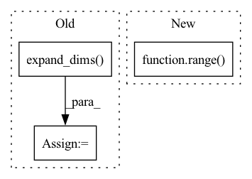

Pattern ID :8483
Before Change
time = df.loc[:, "t"].iloc[n_lags-1:-n_forecasts].values
// time = pd.DataFrame(time)
time = np.expand_dims( time, axis=1)
// lags = pd.DataFrame(
// [df.loc[:, "y"].iloc[i: i + n_lags].values for i in range(n_samples)]
// )After Change
// time is the time at each forecast step
t = df.loc[:, "t"].values
time = np.array([t[n_lags+i: n_lags+i+n_forecasts] for i in range( n_samples) ])
// if time were to be the present time at forecasting
// time = df.loc[:, "t"].iloc[n_lags-1:-n_forecasts].valuesIn pattern: SUPERPATTERN
Frequency: 3
Non-data size: 3
Instances Fragment ID: 29455089
Project Name: ourownstory/neural_prophet
Commit Name: 384f1803a758d07de17db9631d9941c4d7a65de3
Time: 2020-05-19
Author: oskar.triebe@merantix.com
File Name: code/make_dataset.py
M Class Name: AnonimousClass
N Class Name: AnonimousClass
M Method Name: tabularize_univariate_datetime(4)
N Method Name: tabularize_univariate_datetime(5)
M Parent Class:
N Parent Class:
M File Name: code/make_dataset.py
N File Name: code/make_dataset.py
M Start Line: 125
M End Line: 176
N Start Line: 152
N End Line: 184
Before Change
data = pickle.load(f)
xs, us = data
us = np.expand_dims( us, axis=-1)
// import pandas as pd
After Change
us = np.reshape(us, (-1,11,3))
import matplotlib.pyplot as plt
for i in range( 100) :
plt.plot(xs[i,1:,0], xs[i,1:,1])
plt.show()
Fragment ID: 29455091
Project Name: mit-acl/nn_robustness_analysis
Commit Name: 3f301ce67be70902840d23f40aecc98b346c412b
Time: 2021-02-16
Author: mfe@mit.edu
File Name: nn_closed_loop/nn_closed_loop/utils/nn.py
M Class Name: AnonimousClass
N Class Name: AnonimousClass
M Method Name: load_data(0)
N Method Name: load_data(0)
M Parent Class:
N Parent Class:
M File Name: nn_closed_loop/nn_closed_loop/utils/nn.py
N File Name: nn_closed_loop/nn_closed_loop/utils/nn.py
M Start Line: 48
M End Line: 52
N Start Line: 57
N End Line: 70
Before Change
if a > 0 and b > 0 and a + b > 2.0:
unlabled_y[positive_max_id] = unlabled_y[positive_max_id] * -1
unlabled_y[negative_max_id] = unlabled_y[negative_max_id] * -1
unlabled_y = np.expand_dims( unlabled_y, 1)
_y = np.vstack([y, unlabled_y])
self.clf.fit(_X, _y, sample_weight=sample_weight)
else:
breakAfter Change
self.class_dict={classes[0]:-1,classes[1]:1}
self.rev_class_dict = {-1:classes[0] , 1:classes[1]}
y=copy.copy(y)
for _ in range( L) :
y[_]=self.class_dict[y[_]]
self.clf.fit(X, y) Fragment ID: 29455095
Project Name: ygzwqzd/lamda-ssl
Commit Name: 583dd75539ccb548ccfa1f9f19745f30ddb05288
Time: 2022-02-09
Author: 1129198222@qq.com
File Name: Semi_sklearn/Model/Classifier/TSVM.py
M Class Name: TSVM
N Class Name: TSVM
M Method Name: fit(4)
N Method Name: fit(4)
M Parent Class: ClassifierMixin,TransductiveEstimator
N Parent Class: ClassifierMixin,TransductiveEstimator
M File Name: Semi_sklearn/Model/Classifier/TSVM.py
N File Name: Semi_sklearn/Model/Classifier/TSVM.py
M Start Line: 65
M End Line: 92
N Start Line: 66
N End Line: 122